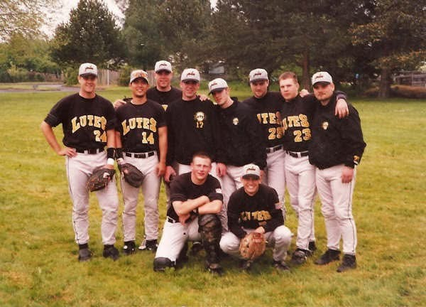

FALL 1991
Football
Senior quarterback; 1,282 passing yards and nine touchdowns. All-Eastside second-team quarterback, team MVP, and recipient of the Team Points Award.
Coach: Bill Heglar
Three sports at Interlake High School. College baseball at Pacific Lutheran University. A collection of games, people, awards, and memories preserved across generations.

THE STORY
Built from original newspaper clippings, handwritten statistics, team evaluations, preserved awards, and firsthand recollections. This is a growing family archive—not an official school record book.
A broken hand before sophomore basketball season meant time recovering on JV. The experience preceded a remarkable junior-year team turnaround.
Under first-year coach Jeff Bright, Interlake improved from 3–17 the prior year to 17–8 overall. A signature 85–82 upset of Mercer Island featured 19 points from McPoland, including 11 in the fourth quarter.
Named Interlake's 1991 football MVP and 1991–92 varsity basketball MVP. In his final basketball game, scored 40 against Cascade in a televised overtime playoff contest.
Continued his baseball career at Pacific Lutheran University, receiving the 1995 Fireman's Award, which McPoland recalls was presented to the team's best pitcher.
THE FAMILY BEHIND THE SCRAPBOOK
Preserving what matters, and making the next chapter a little simpler.
These scrapbooks were a family effort. My grandparents, my mom, and I all saved articles, photos, and memories during my high school and college years. At the time, it seemed like my name was in one of the local papers almost every day, and following along together was a lot of fun.
More than 30 years later, I’m working through old trophies, scrapbooks, photographs, videotapes, and DVDs. After more than 50 years of collecting things, I’ve come to believe that less is more. I’d rather give away what still has value, let go of what doesn’t, and preserve the meaningful memories digitally.
I also don’t want my daughters to someday inherit boxes of memorabilia and have to figure out what to do with it all. This website is one way to make that easier—an accessible home for the stories and images that bring back good memories, without all the boxes.
One of my favorite photographs is from my PLU baseball years in 1995, with my dad Dennis on the left and my grandfather Hugh on the right. Both were great athletes in their day. Grandpa Hugh passed away not long after this picture was taken, making it especially meaningful to preserve here.
INTERLAKE HIGH SCHOOL • SAINTS
FALL 1991
Senior quarterback; 1,282 passing yards and nine touchdowns. All-Eastside second-team quarterback, team MVP, and recipient of the Team Points Award.
1990–1992
Helped lead the 1990–91 turnaround; honorable mention All-KingCo as a junior. Scored 403 points in 25 games as a senior (16.12 per game) and earned team MVP.
1991–1992
Pitcher on Interlake's 1992 state-playoff team. Earned second-team All-Crest recognition as a pitcher and led the league with five saves, according to contemporary coverage.
TEAM MEMORIES • 1990–91
Interlake’s 1990–91 boys basketball team. A photograph of the group that helped turn a 3–17 season into a 17–8 year under coach Jeff Bright.
FEATURED GAME • MARCH 1992
Against Cascade, McPoland scored 40 points, made seven three-pointers, grabbed 13 rebounds, and recorded five steals in a 68–64 overtime playoff loss. Eight points in 40 seconds helped force overtime.
The game was televised in Western Washington as a high school game of the week. The original recording survives on YouTube.
Watch the original game ↗A team photograph from Interlake’s state-tournament season.
Dedicated, searchable chapters for football, basketball, baseball, and the college years.
PACIFIC LUTHERAN UNIVERSITY • LUTES
A right-handed pitcher for PLU, McPoland earned NCIC Pitcher of the Week recognition in 1995 and received the program's Fireman's Award for best pitcher on the team.
| Year | W–L | IP | ERA | K |
|---|---|---|---|---|
| 1993 | 1–2 | 33 | 4.36 | 18 |
| 1994 | 3–0 | 15 | 1.20 | 9 |
| 1995 | 6–3 | 65 | 3.32 | 28 |
| 1993–95 | 10–5 | 113 | 3.35* | 55 |
*Calculated from 42 earned runs in 113 innings. This is a 1993–95 subtotal, not a full college-career total; 1996 statistics remain to be verified.
1995 HIGHLIGHTS
Six wins, three losses, and a 3.32 ERA in 65 innings. A spring press release named McPoland NCIC Pitcher of the Week following a complete-game six-hitter in a 3–1 victory over Pacific.
The original 1995 award plaque identifies the honor as the Fireman's Award; its meaning as best pitcher comes from McPoland's firsthand recollection.
ORIGINAL PRESS CLIPPINGS • 1993–1996
Five preserved newspaper and PLU sports-information clippings, from an early recruiting-era preview through senior-season coverage. Select any original to enlarge it.
A couple of favorite photographs from the PLU years, beyond the newspaper clippings.
ORIGINAL COLLEGE PROGRAMS • 1992 & 1995
Original Pacific Lutheran University football and baseball programs preserve the transition from a multi-sport high-school athlete to a college baseball pitcher.
In 1992, Matt McPoland joined Pacific Lutheran University’s football program under head coach Frosty Westering. The October 3, 1992 game program lists him as No. 38 on the Lutes roster.
After one year in the football program, McPoland decided to focus on baseball and earning his Business Administration degree. He recalls that continuing in multiple college sports could have meant returning for a fifth year as a redshirt senior. His priority was to graduate in four years and move forward with life after college. He graduated from PLU in August 1996.
The roster and coaching details are documented by the 1992 program; the reasons for choosing baseball and a four-year graduation are Matt McPoland’s personal recollections.
Whitworth vs. Pacific Lutheran • October 3, 1992 • Sparks Stadium. Select any page to enlarge.
McPoland appears on the cover of the 1995 baseball guide. His player profile and season outlook document his pitching record and academic major.
DOCUMENTED HIGHLIGHTS • 1991–1995
Standout performances and statistical benchmarks supported by preserved clippings, handwritten season summaries, and PLU releases. School-record status is not asserted without an official record book.
Reached the 1,000-yard passing mark during his senior season, celebrated in the November 7 Seattle Times feature “Look, Ma, 1,000 yards!” Finished the season with 1,282 passing yards and nine touchdown passes.
Read The Seattle Times feature ↗Scored 40 points in an overtime playoff game, hitting 7 of 12 three-pointers, with 13 rebounds and five steals. Eight points in the final 40 seconds of regulation helped force overtime.
Watch the preserved game ↗Recorded five saves for Interlake and led the league in that category according to contemporary coverage. Named second-team All-Crest pitcher as Interlake reached the AAA state tournament.
The preserved handwritten scoring sheet records 403 points across 25 games, an average of 16.12 points per game. The original varsity basketball MVP plaque independently confirms the team honor.
Finished 3–0 with a 1.20 ERA in 15 innings, as recorded in a May 1994 PLU release. The release also notes 2⅔ hitless relief innings in a district tournament upset of Lewis & Clark State.
PLU's April 1995 pitching release described three consecutive conference complete games allowing one run apiece. Matt was named NCIC Pitcher of the Week after a six-hit, 3–1 complete-game win over Pacific.
Source distinctions: the 403-point figure comes from a handwritten season summary; the pitching figures and awards come from contemporary releases and plaques. “Record” here means a preserved historical achievement, not necessarily a school or league all-time record.
THE ROAD NOT TAKEN • 1991–1992
Alongside the scores and awards are decisions that shaped what happened next. These accounts are Matt McPoland’s firsthand recollections, preserved in his own words and distinguished from contemporary records.
BASEBALL • SUMMER 1992
McPoland recalls receiving a call from a Cleveland Indians Northwest-area scout during the 1992 amateur draft, possibly while the club was selecting pitchers in the later rounds. The scout asked whether he would sign if drafted. McPoland said he intended to attend a four-year college, reflecting both his own plans and his parents’ encouragement.
He recalls that he was more passionate about football and basketball than baseball at the time. He does not remember the scout’s name. The call is a personal recollection; a draft selection or formal contract offer has not been documented.
Source: Matt McPoland, firsthand recollection; exact draft-round timing unverified.
FOOTBALL • SENIOR YEAR
McPoland recalls substantial interest from Central Washington’s football program. A recruiter attended some of his basketball games as well as following his football career. He remembers being recruited in the same class as future quarterback Jon Kitna; this is a recollection of the recruiting period, not a claim that the two enrolled together.
Original 1991–92 letters also document contact from Boise State, Eastern Washington, Puget Sound, Willamette, and Whitworth. Boise State invited him to an October 19, 1991 home game and offered complimentary passes.
Sources: original recruiting correspondence; Central Washington and Jon Kitna details from Matt’s recollection.
THE DECISION • 1992
Football and basketball were the sports McPoland most enjoyed, even as baseball offered opportunities. He chose Pacific Lutheran University in part because he hoped to play football alongside baseball. He also recalls scrimmaging, or being invited to scrimmage, with the PLU basketball team while in college.
Looking back, he describes handling recruiting calls himself as a teenager, without much guidance about what to say or how to evaluate the opportunities.
Source: Matt McPoland, firsthand recollection.
COLLEGE YEARS
McPoland recalls injuring his throwing shoulder during his PLU years. He estimates that his fastball lost roughly seven to nine miles per hour afterward, and that professional scouting interest faded. His surviving PLU records nevertheless document a strong 1995 season, including six wins and NCIC Pitcher of the Week recognition.
Sources: firsthand recollection of the injury and velocity change; PLU releases for 1995 performance.
ORIGINAL CORRESPONDENCE • 1991–1992
Recruiting letters preserved by the McPoland family reveal the range of football, basketball and baseball interest during Matt’s junior and senior years. This chronological index summarizes 19 original letters from six institutions. Select any small preview to enlarge the original letter; correspondence does not necessarily indicate a scholarship offer.
A PERSONAL INVITATION • OCTOBER 7, 1991
Recruiting coordinator Scott Pelluer invited Matt to the Broncos’ October 19 game against Northern Arizona, offering complimentary tickets, an opportunity to meet coaches, and pregame access. The letter included a handwritten note praising his performance against Juanita. Matt remembers deciding not to make the trip.
Coach Jeff Bright had recommended Matt as a basketball prospect; the staff was aware of his football abilities and requested a questionnaire.
An introductory letter describing the Boise State football program.
Acknowledged receipt of the recruiting questionnaire; Eastern Washington competed in the Big Sky Conference.
Explained the recruiting process and next steps.
Follow-up introduction to head coach Skip Hall and the football program.
Expressed interest in watching Matt play and staying in contact.
Personal invitation to the October 19 Northern Arizona game, with complimentary passes and access to meet coaches. Handwritten congratulations for the Juanita game. Matt recalls that he did not attend.
The head coach wrote that he had received positive reports about Matt as a prospective student-athlete.
Continued correspondence and requested updates from Matt.
Recruiting contact through Interlake coach Bill Heglar; requested a questionnaire.
Invited Matt to visit the Willamette campus.
Shared information about February recruiting gatherings in Bellevue and Tacoma.
Arranged a campus visit for February 19.
Thanked Matt for visiting campus, confirming that a visit occurred.
Wrote to Matt’s parents, Dennis and Pam McPoland, thanking them following the visit.
Athletic director expressed interest in Matt.
Discussed admission and financial-aid paperwork needed for scholarship consideration; this was not a scholarship offer.
Handwritten pitching-recruitment note requesting a player profile and inviting family contact.
Invitation to visit and complete a recruiting questionnaire.
All 19 original recruiting-letter photographs are now paired with their corresponding catalog entries by letterhead, date, and sender. Recruiting correspondence indicates interest or an invitation—not a confirmed scholarship or roster commitment. Central Washington interest remains a firsthand recollection without a matching scanned letter.
ORIGINAL MEMORABILIA
Photographs of the original plaques and keepsakes. Select an image to view it larger.
Browse original newspaper clippings and box scores by school year. Select a thumbnail to enlarge the original. Dates are marked unverified unless confirmed from the clipping.
Browse junior year, senior year and college. Select a small clipping thumbnail to read the original at full size. Game notes without an available matched scan are presented as text rather than as invented documents.
ORIGINAL SCRAPBOOK • 1992 PLAYOFFS
These are photographs of original scrapbook pages, with several contemporary newspaper reports preserved together.
JUNIOR YEAR • INTERLAKE
Interlake finished 17–8 under coach Jeff Bright, after a 3–17 season the year before. McPoland earned honorable mention All-KingCo recognition.
Mercer Island: 19 points in an 85–82 upset, including 11 in the fourth quarter. Garfield: 18 points in a 62–60 postseason loss, one win short of state. Lake Washington: 18 points and 10 rebounds in a 66–48 win.
Contemporary newspaper summaries; individual box-score images still to be matched.Junior-year basketball coverage of the Mercer Island upset.
View original scan ↗Contemporary reporting on Interlake’s basketball turnaround.
View original scan ↗A look at the basketball program following its turnaround.
View original scan ↗SENIOR YEAR • INTERLAKE
Senior quarterback, varsity basketball MVP and a three-sport athlete weighing his next step.
25 points and four three-pointers; article quotes Coach Bright on football and a reported 90-mph fastball.
View original scan ↗30 points in a 66–58 triple-overtime win; original Richard Dunn newspaper clipping.
View original scan ↗The Seattle Times feature on the senior quarterback’s passing milestone.
View original scan ↗ Read full Seattle Times article ↗Recognized following the 40-point playoff game against Cascade.
View original scan ↗A contemporary look at the choice of college and sport.
View original scan ↗The announcement of his choice to attend Pacific Lutheran.
View original scan ↗Preserved senior-year basketball newspaper coverage.
View original scan ↗Cascade, March 1992: 40 points, 7-for-12 from three, 13 rebounds and five steals in a 68–64 overtime playoff loss. Season: 403 points across 25 games on the preserved scoring sheet.
Watch the preserved Cascade game ↗Full original box-score scans can be added when identified.SENIOR YEAR • BASEBALL
Second-team All-Crest pitcher; five saves led the league, according to contemporary reporting. Interlake advanced to the AAA state tournament.
Original article about Interlake baseball and the postseason feeder series.
View original scan ↗Original KingCo baseball coverage preserved in the scrapbook.
View original scan ↗COLLEGE • PACIFIC LUTHERAN
1994: 3–0, 1.20 ERA. In 1995, named NCIC Pitcher of the Week after a complete-game victory over Pacific; finished 6–3. The 1996 pitching totals are not yet verified.
1993: 1–2, 33 innings, 4.36 ERA. 1994: 3–0, 15 innings, 1.20 ERA. 1995: 6–3, 65 innings, 3.32 ERA; NCIC Pitcher of the Week. These are season totals from preserved PLU records, not verified school records.
Original PLU press-release scans can be attached to these entries in a future update.College-era PLU baseball coverage from the original scrapbook.
View original scan ↗College-era PLU baseball article preserved in the scrapbook.
View original scan ↗The archive is arranged by season; items without a confirmed publication date are labeled accordingly. All original clippings remain unaltered.
SENIOR YEAR • SOUTHERN CALIFORNIA
Original December 1991 Coast Christmas Classic newspaper coverage now identifies both games: 30 points in a triple-overtime win over Newport Harbor on December 26, followed by 25 points in a December 27 quarterfinal loss to Estancia. Select the preserved clippings to enlarge them.
Richard Dunn reports McPoland’s 30 points as Interlake defeated Newport Harbor 66–58 in triple overtime. The preserved Pilot article details a late jumper in the second overtime.
Open original clipping ↗Los Angeles Times coverage ↗McPoland scored 25 points, including four three-pointers, against Estancia. Coach Jeff Bright is quoted describing McPoland as Interlake’s quarterback and a pitcher with a reported 90-mph fastball.
Open original clipping ↗Los Angeles Times coverage ↗MATT'S RECOLLECTION
“I remember playing at Estancia High School in California and meeting Matt Fuerbringer, who was an amazing basketball player. Near the end of the game, I asked where he was going to college. He said Stanford. I told him what a great player he was, and then he said he was going there to play volleyball! I was floored that he wasn't even going to play basketball. Tony Gonzalez, who later became an NFL star, also played in that tournament. It was a lot of fun for a high school kid.”
First-person recollection, paraphrased from Matt's account. The October 25, 1991 Los Angeles Times independently reported Fuerbringer's Stanford volleyball commitment; this does not independently establish the tournament lineup or games.
Read the contemporary Matt Fuerbringer article ↗Search games, seasons, milestones, awards, and source documents. The 19 recruiting letters above include original scans; four featured newspaper articles are also preserved.
Search games, seasons, milestones, awards, and source documents. The 19 recruiting letters above include original scans; four featured newspaper articles are also preserved.
A NOTE ON THE ARCHIVE
These records were saved over decades in a family scrapbook. The goal of this site is to preserve both the original materials and the stories behind them. Some dates and totals are still being checked against contemporary sources.
Original award photographs are from the family collection. Newspaper reporting and handwritten records are identified as such wherever possible. Private IDs and other sensitive personal documents are intentionally excluded.